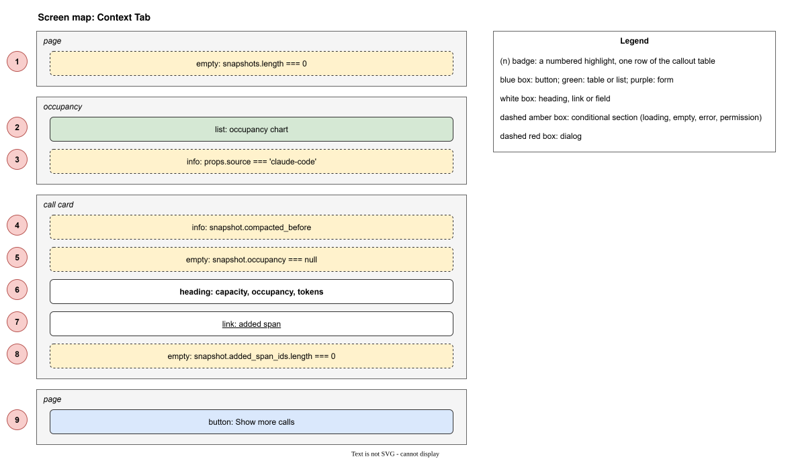

active approved inferred covers web/src/*, web/src/design-system/*
Context Tab Screen Map
This map shows how a reader sees how full the model's context window got during one session. It lets them spot calls near the limit, see where the context was compacted and jump to the steps that added the most. It also shows what is drawn when a size is unknown.
What the diagram shows
- An empty session shows one empty state and nothing else
web/src/ContextTab.tsx:164-171. - Otherwise the occupancy chart comes first, with a reader specific note for Claude Code
web/src/ContextTab.tsx:186-207. - Each call card shows input tokens, the change since the previous call, an occupancy meter, provenance badges and buttons for the spans that added context
web/src/ContextTab.tsx:81-155. - Cards are revealed in batches
web/src/ContextTab.tsx:14web/src/ContextTab.tsx:215-224.
Capability and related functionality
The tab lives inside Session Workspace Screen, and its added span buttons focus Trace Tab Screen. Occupancy and provenance are explained in Web Glossary Map.
Context Tab Screen screen map

Code references
| Badge | Element | Code |
|---|---|---|
| 1 | snapshots.length === 0 empty section |
web/src/ContextTab.tsx:164-164 |
| 2 | <ContextOccupancy occupancy chart |
web/src/ContextTab.tsx:192-192 |
| 3 | props.source === 'claude-code' info section |
web/src/ContextTab.tsx:199-199 |
| 4 | snapshot.compacted_before info section |
web/src/ContextTab.tsx:74-74 |
| 5 | snapshot.occupancy === null empty section |
web/src/ContextTab.tsx:42-42 |
| 6 | <ProvenanceBadge capacity, occupancy, tokens |
web/src/ContextTab.tsx:115-115 |
| 7 | <Button added span |
web/src/ContextTab.tsx:135-139 |
| 8 | snapshot.added_span_ids.length === 0 empty section |
web/src/ContextTab.tsx:149-149 |
| 9 | <Button Show more calls |
web/src/ContextTab.tsx:216-220 |